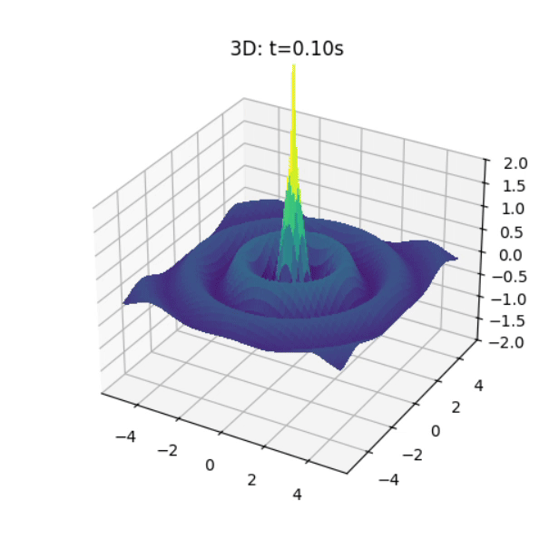
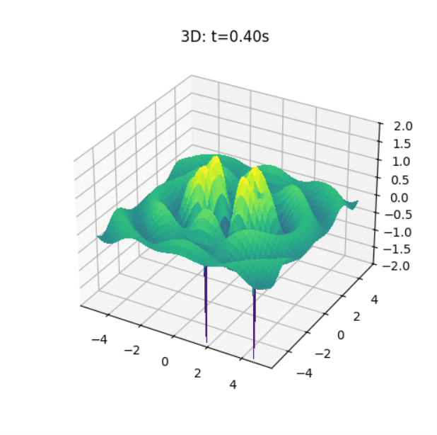
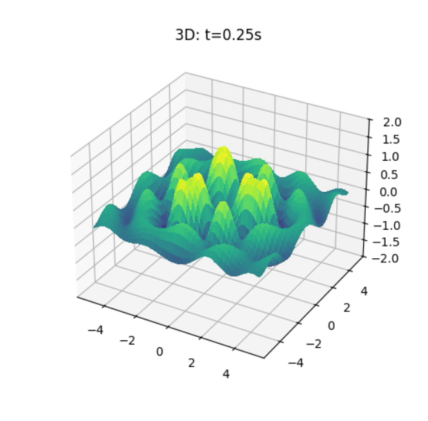

Problem 1
Interference Patterns on a water surface
Water‐Surface Wave Interference from a Regular Polygon of Sources
We model the single disturbance from a point source at \((x_i,y_i)\) by
\[
\eta_i(x,y,t)
=
\frac{A}{\sqrt{r_i}} \,\cos\!\bigl(k\,r_i - \omega\,t + \phi\bigr),
\quad
r_i = \sqrt{(x - x_i)^2 + (y - y_i)^2}
\]
and then superpose \(N\) such waves:
\[
\eta_{\rm sum}(x,y,t) \;=\;\sum_{i=1}^N \eta_i(x,y,t).
\]
1


2


3


4


1. What Is a Wave?
A wave is a disturbance that transfers energy (and often momentum) through a medium or through space, without the bulk motion of the medium’s particles. Examples:
- Ripples on a pond
- Sound in air
- Light in a vacuum
2. Key Terms & Parameters
| Symbol | Name | Definition |
|---|---|---|
| \(A\) | Amplitude | Maximum displacement from equilibrium |
| \(\lambda\) | Wavelength | Distance over which the wave’s shape repeats |
| \(T\) | Period | Time for one complete cycle (seconds) |
| \(f\) | Frequency | Number of cycles per second; \(\displaystyle f = \tfrac{1}{T}\) (Hz) |
| \(v\) | Wave speed | \(\displaystyle v = \lambda\,f\) (m/s) |
| \(k\) | Wavenumber | \(\displaystyle k = \tfrac{2\pi}{\lambda}\) (rad/m) |
| \(\omega\) | Angular frequency | \(\displaystyle \omega = 2\pi\,f\) (rad/s) |
3. Types of Waves
- Mechanical vs. Electromagnetic
- Mechanical: Require a medium (e.g. water waves, sound)
-
Electromagnetic: Can travel in vacuum (e.g. light, radio)
-
Transverse vs. Longitudinal
- Transverse: Oscillation ⟂ direction of propagation (e.g. water surface, EM waves)
-
Longitudinal: Oscillation ∥ direction of propagation (e.g. sound in air)
-
Progressive vs. Standing
- Progressive (Traveling) Waves: Energy and phase travel through space
- Standing Waves: Fixed nodes and antinodes—result of two opposite traveling waves of equal frequency and amplitude
4. Basic Wave Equations
4.1 Plane Harmonic Wave
A one‐dimensional traveling wave along \(x\): $$ y(x,t) \;=\; A \,\cos!\bigl(k\,x \;-\;\omega\,t \;+\;\phi\bigr) $$
4.2 Wave Equation (1D)
The standard 1D wave equation is $$ \frac{\partial^2 y}{\partial x^2} \;=\; \frac{1}{v^2} \, \frac{\partial^2 y}{\partial t^2}. $$
5. Dispersion & Group Velocity
- Dispersion: When wave speed \(v\) depends on wavelength \(\lambda\). Different frequency components travel at different speeds.
- Group velocity:
$$
v_g \;=\; \frac{d\omega}{dk},
$$
the speed at which a wave packet (and thus energy/information) propagates.
6. Examples in Nature
- Ocean waves: Gravity-driven surface waves, dispersion relation $$ \omega^2 = g\,k\,\tanh(k\,h). $$
- Sound waves: Pressure oscillations governed by the acoustic wave equation.
- Light waves: Oscillating electric and magnetic fields governed by Maxwell’s equations.